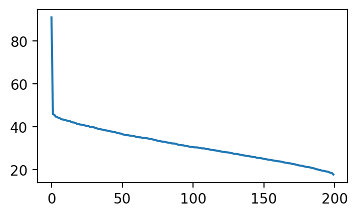
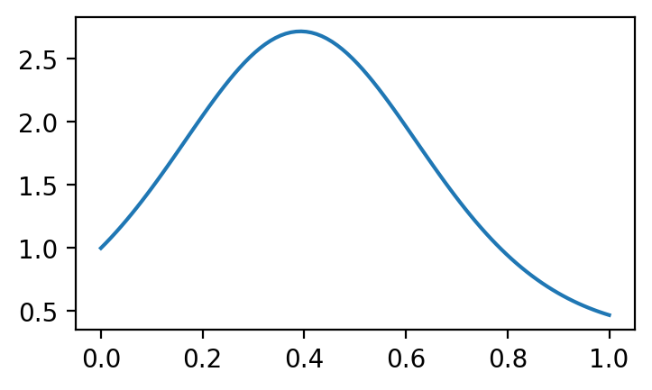
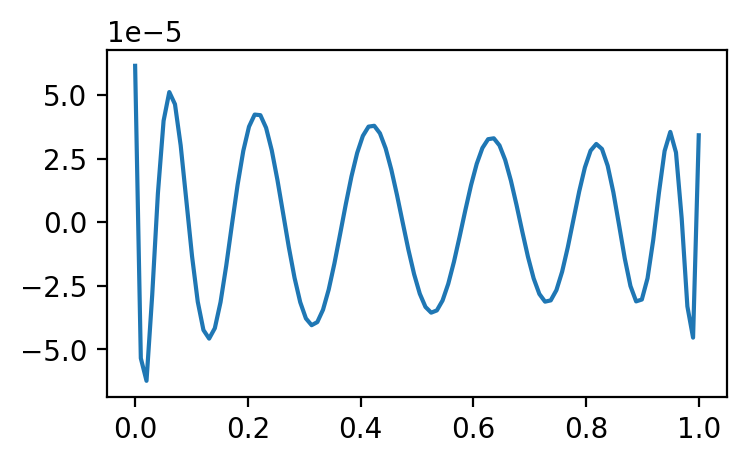
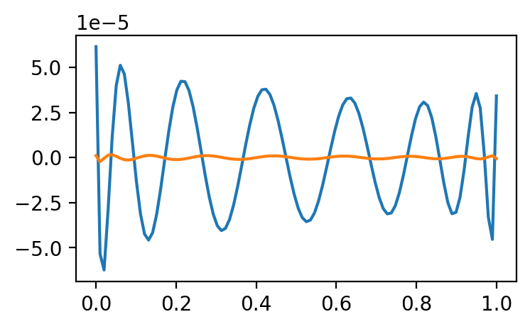

\(\newcommand{\horz}{\rule[.5ex]{2.5ex}{0.5pt}}\)
4.7. Advanced material#
We cover various more advanced topics.
4.7.1. Why project?#
We return to \(k\)-means clustering and why projecting to a lower-dimensional subspace can produce better results. We prove a simple inequality that provides some insight. Quoting [BHK, Section 7.5.1]:
[…] let’s understand the central advantage of doing the projection to [the top \(k\) right singular vectors]. It is simply that for any reasonable (unknown) clustering of data points, the projection brings data points closer to their cluster centers.
To elaborate, suppose we have \(n\) data points in \(d\) dimensions in the form of the rows \(\mathbf{a}_i^T\), \(i=1\ldots, n\), of matrix \(A \in \mathbb{A}^{n \times d}\), where we assume that \(n > d\) and that \(A\) has full column rank. Imagine these data points come from an unknown ground-truth \(k\)-clustering assignment \(g(i) \in [k]\), \(i = 1,\ldots, n\), with corresponding unknown centers \(\mathbf{c}_j\), \(j = 1,\ldots, k\), for \(g(i) = j\). Let \(C \in \mathbb{R}^{n \times d}\) be the corresponding matrix, that is, row \(i\) of \(C\) is \(\mathbf{c}_j^T\) if \(g(i) = j\). The \(k\)-means objective of the true clustering is then
The matrix \(A\) has an SVD
and for \(k < r\) we have the truncation
It corresponds to projecting each row of \(A\) onto the linear subspace spanned by the first \(k\) right singular vectors \(\mathbf{v}_1, \ldots, \mathbf{v}_k\). To see this, note that the \(i\)-th row of \(A\) is \(\boldsymbol{\alpha}_i^T = \sum_{j=1}^r \sigma_j u_{j,i} \mathbf{v}_j^T\) and that, because the \(\mathbf{v}_j\)’s are linearly independent and in particular \(\mathbf{v}_1,\ldots,\mathbf{v}_k\) is an orthonormal basis of its span, the projection of \(\boldsymbol{\alpha}_i\) onto \(\mathrm{span}(\mathbf{v}_1,\ldots,\mathbf{v}_k)\) is
which is the \(i\)-th row of \(A_k\). The \(k\)-means objective of \(A_k\) with respect to the ground-truth centers \(\mathbf{c}_j\), \(j=1,\ldots,k\), is \(\|A_k - C\|_F^2\).
One more observation: the rank of \(C\) is at most \(k\). Indeed, there are \(k\) different rows in \(C\) so its row rank is \(k\) if these different rows are linearly independent and less than \(k\) otherwise.
THEOREM (Why Project) Let \(A \in \mathbb{A}^{n \times d}\) be a matrix and let \(A_k\) be the truncation above. For any matrix \(C \in \mathbb{R}^{n \times d}\) of rank \(\leq k\),
\(\sharp\)
The content of this inequality is the following. The quantity \(\|A_k - C\|_F^2\) is the \(k\)-means objective of the projection \(A_k\) with respect to the true centers, that is, the sum of the squared distances to the centers. By the Matrix Norms and Singular Values Lemma, the inequality above gives that
where \(\sigma_j(A - C)\) is the \(j\)-th singular value of \(A - C\). On the other hand, by the same lemma, the \(k\)-means objective of the un-projected data is
If the rank of \(A-C\) is much larger than \(k\) and the singular values of \(A-C\) decay slowly, then the latter quantity may be much larger. In other words, projecting may bring the data points closer to their true centers, potentially making it easier to cluster them.
Proof: (Why Project) We have shown previously that, for any matrices \(A, B \in \mathbb{R}^{n \times m}\), the rank of their sum is less or equal than the sum of their ranks, that is,
So the rank of the difference \(A_k - C\) is at most the sum of the ranks
where we used that the rank of \(A_k\) is \(k\) and the rank of \(C\) is \(\leq k\) since it has \(k\) distinct rows. By the Matrix Norms and Singular Values Lemma,
By the triangle inequality for matrix norms,
By the Low-Rank Approximation in the Induced Norm Theorem,
since \(C\) has rank at most \(k\). Putting these three inequalities together,
\(\square\)
NUMERICAL CORNER: We return to our example with the two Gaussian clusters. We use again the function producing to separate clusters.
d, n, w = 1000, 100, 3.
X1, X2 = mmids.two_separated_clusters(d, n, w)
X = np.concatenate((X1, X2), axis=0)
In reality, we cannot compute the matrix norms of \(X-C\) and \(X_k-C\) as the true centers are not known. But, because this is simulated data, we happen to know the truth and we can check the validity of our results in this case. The centers are:
C1 = np.stack([np.concatenate(([-w], np.zeros(d-1))) for _ in range(n)])
C2 = np.stack([np.concatenate(([w], np.zeros(d-1))) for _ in range(n)])
C = np.concatenate((C1, C2), axis=0)
We use numpy.linalg.svd function to compute the norms from the formulas in the Matrix Norms and Singular Values Lemma. First, we observe that the singular values of \(X-C\) are decaying slowly.
uc, sc, vhc = LA.svd(X-C)
plt.plot(sc)
plt.show()

The \(k\)-means objective with respect to the true centers under the full-dimensional data is:
frob = np.sum(sc**2)
print(frob)
207905.47916782406
while the square of the top singular value of \(X-C\) is only:
top_sval_sq = sc[0]**2
print(top_sval_sq)
8258.19604762502
Finally, we compute the \(k\)-means objective with respect to the true centers under the projected one-dimensional data:
u, s, vh = LA.svd(X)
frob_proj = np.sum((s[0] * np.outer(u[:,0],vh[:,0]) - C)**2)
print(frob_proj)
8099.057045408984
\(\unlhd\)
4.7.2. Condition numbers#
In this section we introduce condition numbers, a measure of perturbation sensitivity for numerical problems. We look in particular at the conditioning of the least-squares problem. We begin with the concept of pseudoinverse, which is important in its own right.
Conditioning of matrix-vector multiplication We define the condition number of a matrix and show that it captures some information about the sensitivity to perturbations of matrix-vector multiplications.
DEFINITION (Condition number of a matrix) The condition number (in the induced \(2\)-norm) of a square, nonsingular matrix \(A \in \mathbb{R}^{n \times n}\) is defined as
\(\natural\)
In fact, this can be computed as
where we used the example above. In words, \(\kappa_2(A)\) is the ratio of the largest to the smallest stretching under \(A\).
THEOREM (Conditioning of Matrix-Vector Multiplication) Let \(M \in \mathbb{R}^{n \times n}\) be nonsingular. Then, for any \(\mathbf{z} \in \mathbb{R}^n\),
and the inequality is tight in the sense that there is an \(\mathbf{x}\) and a \(\mathbf{d}\) that achieves it.
\(\sharp\)
The ratio above measures the worst rate of relative change in \(M \mathbf{z}\) under infinitesimal perturbations of \(\mathbf{z}\). The theorem says that when \(\kappa_2(M)\) is large, a case referred to as ill-conditioning, large relative changes in \(M \mathbf{z}\) can be obtained from relatively small perturbations to \(\mathbf{z}\). In words, a matrix-vector product is potentially sensitive to perturbations when the matrix is ill-conditioned.
Proof: Write
where we used \(\min_{\mathbf{u} \in \mathbb{S}^{n-1}} \|A \mathbf{u}\| = \sigma_n\), which was shown in a previous example.
In particular, we see that the ratio can achieve its maximum by taking \(\mathbf{d}\) and \(\mathbf{z}\) to be the right singular vectors corresponding to \(\sigma_1\) and \(\sigma_n\) respectively. \(\square\)
If we apply the theorem to the inverse instead, we get that the relative conditioning of the nonsingular linear system \(A \mathbf{x} = \mathbf{b}\) to perturbations in \(\mathbf{b}\) is \(\kappa_2(A)\). The latter can be large in particular when the columns of \(A\) are close to linearly dependent. This is detailed in the next example.
EXAMPLE: Let \(A \in \mathbb{R}^{n \times n}\) be nonsingular. Then, for any \(\mathbf{b} \in \mathbb{R}^n\), there exists a unique solution to \(A \mathbf{x} = \mathbf{b}\), namely,
Suppose we solve the perturbed system
for some vector \(\delta\mathbf{b}\). We use the Conditioning of Matrix-Vector Multiplication Theorem to bound the norm of \(\delta\mathbf{x}\).
Specifically, set
Then
and
So we get that
Note also that, because \((A^{-1})^{-1} = A\), we have \(\kappa_2(A^{-1}) = \kappa_2(A)\). Rearranging, we finally get
Hence the larger the condition number is, the larger the potential relative effect on the solution of the linear system is for a given relative perturbation size. \(\lhd\)
NUMERICAL CORNER: In Numpy, the condition number of a matrix can be computed using the function numpy.linalg.cond.
For example, orthogonal matrices have condition number \(1\), the lowest possible value for it (Why?). That indicates that orthogonal matrices have good numerical properties.
q = 1/np.sqrt(2)
Q = np.array([[q, q], [q, -q]])
print(Q)
[[ 0.70710678 0.70710678]
[ 0.70710678 -0.70710678]]
LA.cond(Q)
1.0000000000000002
In contrast, matrices with nearly linearly dependent columns have large condition numbers.
eps = 1e-6
A = np.array([[q, q], [q, q+eps]])
print(A)
[[0.70710678 0.70710678]
[0.70710678 0.70710778]]
LA.cond(A)
2828429.1245844117
Let’s look at the SVD of \(A\).
u, s, vh = LA.svd(A)
print(s)
[1.41421406e+00 4.99999823e-07]
We compute the solution to \(A \mathbf{x} = \mathbf{b}\) when \(\mathbf{b}\) is the left singular vector of \(A\) corresponding to the largest singular value. Recall that in the proof of the Conditioning of Matrix-Vector Multiplication Theorem, we showed that the worst case bound is achieved when \(\mathbf{z} = \mathbf{b}\) is right singular vector of \(M= A^{-1}\) corresponding to the lowest singular value. In a previous example, given a matrix \(A = \sum_{j=1}^n \sigma_j \mathbf{u}_j \mathbf{v}_j^T\) in compact SVD form, we derived a compact SVD for the inverse as
Here, compared to the SVD of \(A\), the order of the singular values is reversed and the roles of the left and right singular vectors are exchanged. So we take \(\mathbf{b}\) to be the top left singular vector of \(A\).
b = u[:,0]
print(b)
[-0.70710653 -0.70710703]
x = LA.solve(A,b)
print(x)
[-0.49999965 -0.5 ]
We make a small perturbation in the direction of the second right singular vector. Recall that in the proof of the Conditioning of Matrix-Vector Multiplication Theorem, we showed that the worst case is achieved when \(\mathbf{d} = \delta\mathbf{b}\) is top right singular vector of \(M = A^{-1}\). By the argument above, that is the left singular vector of \(A\) corresponding to the lowest singular value.
delta = 1e-6
bp = b + delta*u[:,1]
print(bp)
[-0.70710724 -0.70710632]
The relative change in solution is:
xp = LA.solve(A,bp)
print(xp)
[-1.91421421 0.91421356]
(LA.norm(x-xp)/LA.norm(x))/(LA.norm(b-bp)/LA.norm(b))
2828429.124665918
Note that this is exactly the condition number of \(A\).
\(\unlhd\)
Back to the least-squares problem We return to the least-squares problem
where
We showed that the solution satisfies the normal equations
Here \(A\) may not be square and invertible. We define a more general notion of condition number.
DEFINITION (Condition number of a matrix: general case) The condition number (in the induced \(2\)-norm) of a matrix \(A \in \mathbb{R}^{n \times m}\) is defined as
\(\natural\)
As we show next, the condition number of \(A^T A\) can be much larger than that of \(A\) itself.
LEMMA (Condition number of \(A^T A\)) Let \(A \in \mathbb{R}^{n \times m}\) have full column rank. The
\(\flat\)
Proof idea: We use the SVD.
Proof: Let \(A = U \Sigma V^T\) be an SVD of \(A\) with singular values \(\sigma_1 \geq \cdots \geq \sigma_m > 0\). Then
In particular the latter expression is an SVD of \(A^T A\), and hence the condition number of \(A^T A\) is
\(\square\)
NUMERICAL CORNER: We give a quick example.
A = np.array([[1., 101.],[1., 102.],[1., 103.],[1., 104.],[1., 105]])
print(A)
[[ 1. 101.]
[ 1. 102.]
[ 1. 103.]
[ 1. 104.]
[ 1. 105.]]
LA.cond(A)
7503.817028686101
LA.cond(A.T @ A)
56307270.00472849
This observation – and the resulting increased numerical instability – is one of the reasons we previously developed an alternative approach to the least-squares problem. Quoting [Sol, Section 5.1]:
Intuitively, a primary reason that \(\mathrm{cond}(A^T A)\) can be large is that columns of \(A\) might look “similar” […] If two columns \(\mathbf{a}_i\) and \(\mathbf{a}_j\) satisfy \(\mathbf{a}_i \approx \mathbf{a}_j\), then the least-squares residual length \(\|\mathbf{b} - A \mathbf{x}\|_2\) will not suffer much if we replace multiples of \(\mathbf{a}_i\) with multiples of \(\mathbf{a}_j\) or vice versa. This wide range of nearly—but not completely—equivalent solutions yields poor conditioning. […] To solve such poorly conditioned problems, we will employ an alternative technique with closer attention to the column space of \(A\) rather than employing row operations as in Gaussian elimination. This strategy identifies and deals with such near-dependencies explicitly, bringing about greater numerical stability.
\(\unlhd\)
We quote without proof a theorem from [Ste, Theorem 4.2.7] which sheds further light on this issue.
THEOREM (Accuracy of Least-squares Solutions) Let \(\mathbf{x}^*\) be the solution of the least-squares problem \(\min_{\mathbf{x} \in \mathbb{R}^m} \|A \mathbf{x} - \mathbf{b}\|\). Let \(\mathbf{x}_{\mathrm{NE}}\) be the solution obtained by forming and solving the normal equations in floating-point arithmetic with rounding unit \(\epsilon_M\). Then \(\mathbf{x}_{\mathrm{NE}}\) satisfies
Let \(\mathbf{x}_{\mathrm{QR}}\) be the solution obtained from a QR factorization in the same arithmetic. Then
where \(\mathbf{r}^* = \mathbf{b} - A \mathbf{x}^*\) is the residual vector. The constants \(\gamma\) are slowly growing functions of the dimensions of the problem.
\(\sharp\)
To explain, let’s quote [Ste, Section 4.2.3] again:
The perturbation theory for the normal equations shows that \(\kappa_2^2(A)\) controls the size of the errors we can expect. The bound for the solution computed from the QR equation also has a term multiplied by \(\kappa_2^2(A)\), but this term is also multiplied by the scaled residual, which can diminish its effect. However, in many applications the vector \(\mathbf{b}\) is contaminated with error, and the residual can, in general, be no smaller than the size of that error.
NUMERICAL CORNER: Here is a numerical example taken from [TB, Lecture 19]. We will approximate the following function with a polynomial.
n = 100
t = np.arange(n)/(n-1)
b = np.exp(np.sin(4 * t))
Show code cell source
plt.plot(t, b)
plt.show()

We use a Vandermonde matrix, which can be constructed using numpy.vander, to perform polynomial regression.
m = 17
A = np.vander(t, m, increasing=True)
The condition numbers of \(A\) and \(A^T A\) are both high in this case.
print(LA.cond(A))
755823354629.852
print(LA.cond(A.T @ A))
3.846226459131048e+17
We first use the normal equations and plot the residual vector.
xNE = LA.solve(A.T @ A, A.T @ b)
print(LA.norm(b - A@xNE))
0.0002873101427587512
Show code cell source
plt.plot(t, b - A@xNE)
plt.show()

We then use numpy.linalg.qr to compute the QR solution instead.
Q, R = LA.qr(A)
xQR = mmids.backsubs(R, Q.T @ b)
print(LA.norm(b - A@xQR))
7.359657452370885e-06
Show code cell source
plt.plot(t, b - A@xNE)
plt.plot(t, b - A@xQR)
plt.show()

\(\unlhd\)
4.7.3. Additional proofs#
In this section, we give several proofs that were left out in this chapter.
Proof of the Number of Eigenvalues Lemma We start with a proof that distinct eigenvalues correspond to linearly independent eigenvectors.
Proof: (Number of Eigenvalues) Assume by contradiction that \(\mathbf{x}_1, \ldots, \mathbf{x}_m\) are linearly dependent. By the Linear Dependence Lemma, there is \(k \leq m\) such that
where \(\mathbf{x}_1, \ldots, \mathbf{x}_{k-1}\) are linearly independent. In particular, there are \(a_1, \ldots, a_{k-1}\) such that
Transform the equation above in two ways: (1) multiply both sides by \(\lambda_k\) and (2) apply \(A\). Then subtract the resulting equations. That leads to
Because the \(\lambda_i\)’s are distinct and \(\mathbf{x}_1, \ldots, \mathbf{x}_{k-1}\) are linearly independent, we must have \(a_1 = \cdots = a_{k-1} = 0\). But that implies that \(\mathbf{x}_k = \mathbf{0}\), a contradiction.
For the second claim, if there were more than \(d\) distinct eigenvalues, then there would be more than \(d\) corresponding linearly independent eigenvectors by the first claim, a contradiction. \(\square\)
Proof of Greedy Finds Best Subspace In this section, we prove the Greedy Finds Best Subspace Theorem without the use of the Spectral Theorem.
Proof idea: We proceed by induction. For an arbitrary orthonormal list \(\mathbf{w}_1,\ldots,\mathbf{w}_k\), we find an orthonormal basis of their span containing an element orthogonal to \(\mathbf{v}_1,\ldots,\mathbf{v}_{k-1}\). Then we use the defintion of \(\mathbf{v}_k\) to conclude.
Proof: As we explained in the previous subsection, we reformulate the problem as a maximization
where we also replace the \(k\)-dimensional linear subspace \(\mathcal{Z}\) with an arbitrary orthonormal basis \(\{\mathbf{w}_1,\ldots,\mathbf{w}_k\}\).
We then proceed by induction. For \(k=1\), we define \(\mathbf{v}_1\) as a solution of the above maximization problem. Assume that, for any orthonormal list \(\{\mathbf{w}_1,\ldots,\mathbf{w}_\ell\}\) with \(\ell < k\), we have
Now consider any orthonormal list \(\{\mathbf{w}_1,\ldots,\mathbf{w}_k\}\) and let its span be \(\mathcal{W} = \mathrm{span}(\mathbf{w}_1,\ldots,\mathbf{w}_k)\).
Step 1: For \(j=1,\ldots,k-1\), let \(\mathbf{v}_j'\) be the orthogonal projection of \(\mathbf{v}_j\) onto \(\mathcal{W}\) and let \(\mathcal{V}' = \mathrm{span}(\mathbf{v}'_1,\ldots,\mathbf{v}'_{k-1})\). Because \(\mathcal{V}' \subseteq \mathcal{W}\) has dimension at most \(k-1\) while \(\mathcal{W}\) itself has dimension \(k\), we can find an orthonormal basis \(\mathbf{w}'_1,\ldots,\mathbf{w}'_{k}\) of \(\mathcal{W}\) such that \(\mathbf{w}'_k\) is orthogonal to \(\mathcal{V}'\) (Why?). Then, for any \(j=1,\ldots,k-1\), we have the decomposition \(\mathbf{v}_j = \mathbf{v}'_j + (\mathbf{v}_j - \mathbf{v}'_j)\) where \(\mathbf{v}'_j \in \mathcal{V}'\) is orthogonal to \(\mathbf{w}'_k\) and \(\mathbf{v}_j - \mathbf{v}'_j\) is also orthogonal to \(\mathbf{w}'_k \in \mathcal{W}\) by the properties of the orthogonal projection onto \(\mathcal{W}\). Hence
for any \(\beta_j\)’s. That is, \(\mathbf{w}'_k\) is orthogonal to \(\mathrm{span}(\mathbf{v}_1,\ldots,\mathbf{v}_{k-1})\).
Step 2: By the induction hypothesis, we have
Moreover, recalling that the \(\boldsymbol{\alpha}_i^T\)’s are the rows of \(A\),
since the \(\mathbf{w}_j\)’s and \(\mathbf{w}'_j\)’s form an orthonormal basis of the same subspace \(\mathcal{W}\). Since \(\mathbf{w}'_k\) is orthogonal to \(\mathrm{span}(\mathbf{v}_1,\ldots,\mathbf{v}_{k-1})\) by the conclusion of Step 1, by the definition of \(\mathbf{v}_k\) as a solution to
we have
Step 3: Putting everything together
which proves the claim. \(\square\)
Proof of Existence of the SVD We return to the proof of the Existence of SVD Theorem. We give an alternative proof that does not rely on the Spectral Theorem.
Proof: We have already done most of the work. The proof works as follows:
(1) Compute the greedy sequence \(\mathbf{v}_1,\ldots,\mathbf{v}_r\) from the Greedy Finds Best Subspace Theorem until the largest \(r\) such that
or, otherwise, until \(r=m\). The \(\mathbf{v}_j\)’s are orthonormal by construction.
(2) For \(j=1,\ldots,r\), let
Observe that, by our choice of \(r\), the \(\sigma_j\)’s are \(> 0\). They are also non-increasing: by definition of the greedy sequence,
where the set of orthogonality constraints gets larger as \(i\) increases. Hence, the \(\mathbf{u}_j\)’s have unit norm by definition.
We show below that they are also orthogonal.
(3) Let \(\mathbf{z} \in \mathbb{R}^m\) be any vector. To show that our construction is correct, we prove that \(A \mathbf{z} = \left(U \Sigma V^T\right)\mathbf{z}\). Let \(\mathcal{V} = \mathrm{span}(\mathbf{v}_1,\ldots,\mathbf{v}_r)\) and decompose \(\mathbf{z}\) into orthogonal components
Applying \(A\) and using linearity, we get
We claim that \(A (\mathbf{z} - \mathrm{proj}_{\mathcal{V}}(\mathbf{z})) = \mathbf{0}\). If \(\mathbf{z} - \mathrm{proj}_{\mathcal{V}}(\mathbf{z}) = \mathbf{0}\), that is certainly the case. If not, let
By definition of \(r\),
Put differently, \(\|A \mathbf{w}_{r+1}\|^2 = 0\) (i.e. \(A \mathbf{w}_{r+1} = \mathbf{0}\)), for any unit vector \(\mathbf{w}_{r+1}\) orthogonal to \(\mathbf{v}_1,\ldots,\mathbf{v}_r\). That applies in particular to \(\mathbf{w}_{r+1} = \mathbf{w}\) by the Orthogonal Projection Theorem.
Hence, using the definition of \(\mathbf{u}_j\) and \(\sigma_j\), we get
That proves the existence of the SVD.
All that is left to prove is the orthogonality of the \(\mathbf{u}_j\)’s.
LEMMA (Left Singular Vectors are Orthogonal) For all \(1 \leq i \neq j \leq r\), \(\langle \mathbf{u}_i, \mathbf{u}_j \rangle = 0\). \(\flat\)
Proof idea: Quoting [BHK, Section 3.6]:
Intuitively if \(\mathbf{u}_i\) and \(\mathbf{u}_j\), \(i < j\), were not orthogonal, one would suspect that the right singular vector \(\mathbf{v}_j\) had a component of \(\mathbf{v}_i\) which would contradict that \(\mathbf{v}_i\) and \(\mathbf{v}_j\) were orthogonal. Let \(i\) be the smallest integer such that \(\mathbf{u}_i\) is not orthogonal to all other \(\mathbf{u}_j\). Then to prove that \(\mathbf{u}_i\) and \(\mathbf{u}_j\) are orthogonal, we add a small component of \(\mathbf{v}_j\) to \(\mathbf{v}_i\), normalize the result to be a unit vector \(\mathbf{v}'_i \propto \mathbf{v}_i + \varepsilon \mathbf{v}_j\) and show that \(\|A \mathbf{v}'_i\| > \|A \mathbf{v}_i\|\), a contradiction.
Proof: We argue by contradiction. Let \(i\) be the smallest index such that there is a \(j > i\) with \(\langle \mathbf{u}_i, \mathbf{u}_j \rangle = \delta \neq 0\). Assume \(\delta > 0\) (otherwise use \(-\mathbf{u}_i\)). For \(\varepsilon \in (0,1)\), because the \(\mathbf{v}_k\)’s are orthonormal, \(\|\mathbf{v}_i + \varepsilon \mathbf{v}_j\|^2 = 1+\varepsilon^2\). Consider the vectors
Observe that \(\mathbf{v}'_i\) is orthogonal to \(\mathbf{v}_1,\ldots,\mathbf{v}_{i-1}\), so that
On the other hand, by the Orthogonal Decomposition Lemma, we can write \(A \mathbf{v}_i'\) as a sum of its orthogonal projection on the unit vector \(\mathbf{u}_i\) and \(A \mathbf{v}_i' - \mathrm{proj}_{\mathbf{u}_i}(A \mathbf{v}_i')\), which is orthogonal to \(\mathbf{u}_i\). In particular, by Pythagoras, \(\|A \mathbf{v}_i'\| \geq \|\mathrm{proj}_{\mathbf{u}_i}(A \mathbf{v}_i')\|\). But that implies, for \(\varepsilon \in (0,1)\),
where the second inequality follows from a Taylor expansion or the observation
Now note that
for \(\varepsilon\) small enough, contradicting the inequality above. \(\square\)
SVD and Approximating Subspace In constructing the SVD of \(A\), we used the greedy sequence for the best approximating subspace. Vice versa, given an SVD of \(A\), we can read off the solution to the approximating subspace problem. In other words, there was nothing special about the specific construction we used to prove existence of the SVD. While a matrix may have many SVDs, they all give a solution to the approximating subspace problems.
Further, this perspective gives what is known as a variational characterization of the singular values. We will have more to say about variational characterizations and their uses in the next chapter.
SVD and greedy sequence Indeed, let
be an SVD of \(A\) with
We show that the \(\mathbf{v}_j\)’s form a greedy sequence for the approximating subspace problem. Complete \(\mathbf{v}_1,\ldots,\mathbf{v}_r\) into an orthonormal basis of \(\mathbb{R}^m\) by adding appropriate vectors \(\mathbf{v}_{j+1},\ldots,\mathbf{v}_m\). By construction, \(A\mathbf{v}_{i} = \mathbf{0}\) for all \(i=j+1,\ldots,m\).
We start with the case \(j=1\). For any unit vector \(\mathbf{w} \in \mathbb{R}^m\), we expand it as \(\mathbf{w} = \sum_{i=1}^m \langle \mathbf{w}, \mathbf{v}_i\rangle \,\mathbf{v}_i\). By the Properties of Orthonormal Lists,
where we used the orthonormality of the \(\mathbf{u}_i\)’s and the fact that \(\mathbf{v}_{j+1},\ldots,\mathbf{v}_m\) are in the null space of \(A\). Because the \(\sigma_i\)’s are non-increasing, this last sum is maximized by taking \(\mathbf{w} = \mathbf{v}_1\). So we have shown that \(\mathbf{v}_1 \in \arg\max\{\|A \mathbf{w}\|^2:\|\mathbf{w}\| = 1\}\).
By the Properties of Orthonormal Lists,
Hence, because the \(\sigma_i\)’s are non-increasing, the sum
This upper bound is achieved by taking \(\mathbf{w} = \mathbf{v}_1\). So we have shown that \(\mathbf{v}_1 \in \arg\max\{\|A \mathbf{w}\|^2:\|\mathbf{w}\| = 1\}\).
More generally, for any unit vector \(\mathbf{w} \in \mathbb{R}^m\) that is orthogonal to \(\mathbf{v}_1,\ldots,\mathbf{v}_{j-1}\), we expand it as \(\mathbf{w} = \sum_{i=j}^m \langle \mathbf{w}, \mathbf{v}_i\rangle \,\mathbf{v}_i\). Then, as long as \(j\leq r\),
where again we used that the \(\sigma_i\)’s are non-increasing and \(\sum_{i=1}^m \langle \mathbf{w}, \mathbf{v}_i\rangle^2 = 1\). This last bound is achieved by taking \(\mathbf{w} = \mathbf{v}_j\).
So we have shown the following.
THEOREM (Variational Characterization of Singular Values) Let \(A = \sum_{j=1}^r \sigma_j \mathbf{u}_j \mathbf{v}_j^T\) be an SVD of \(A\) with \(\sigma_1 \geq \sigma_2 \geq \cdots \geq \sigma_r > 0\). Then
and
\(\sharp\)